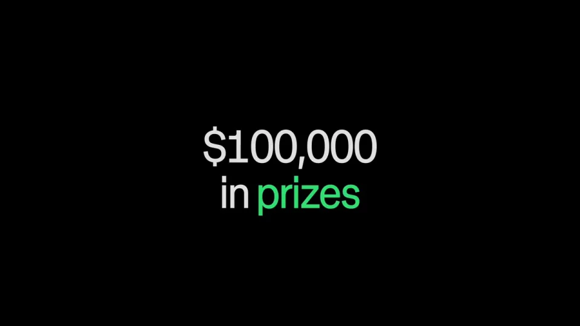
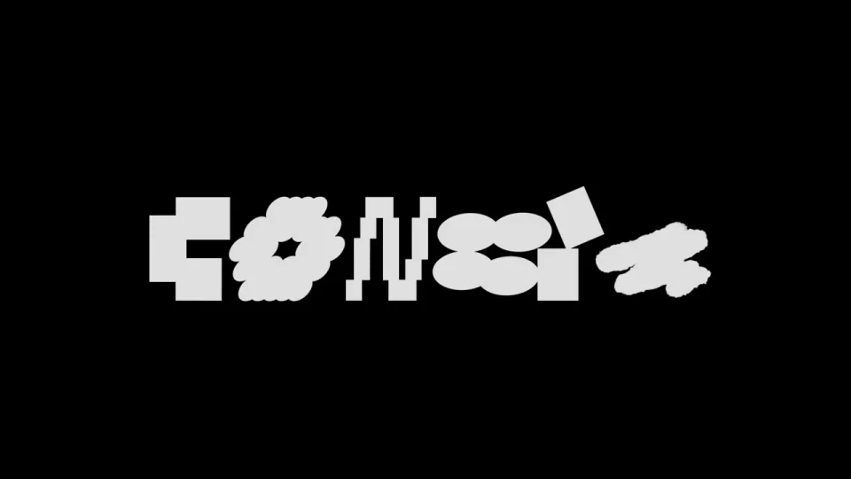
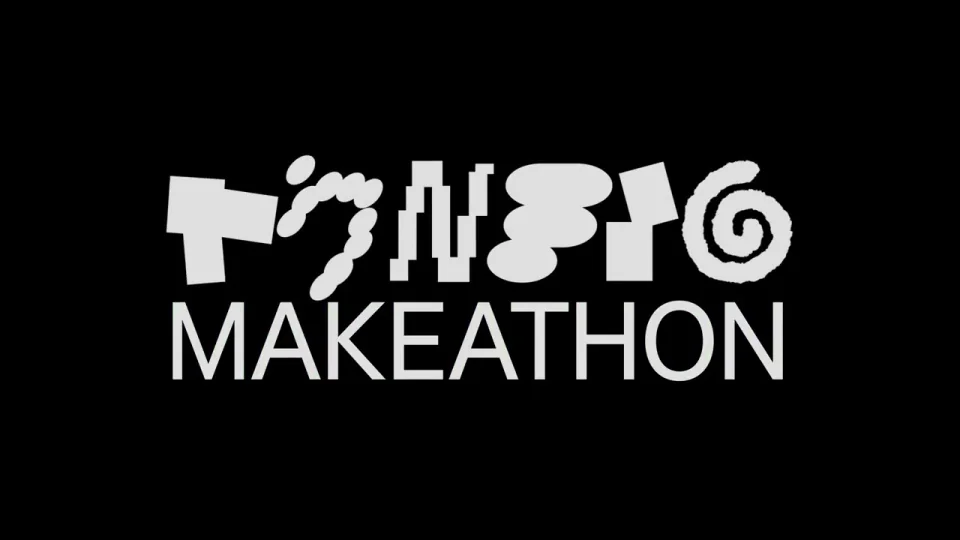
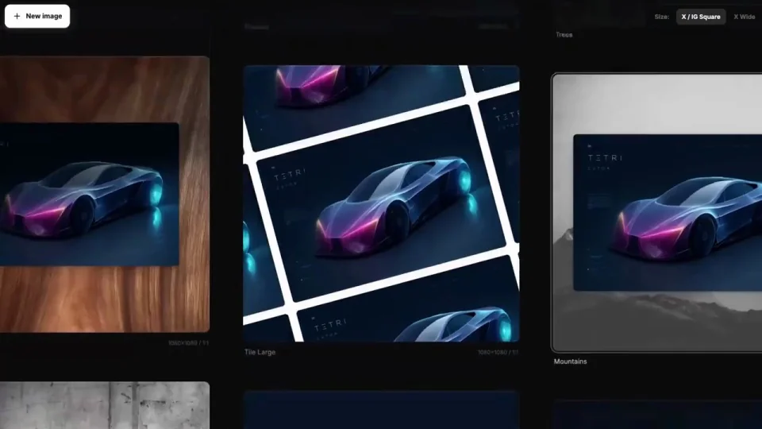

Figma / V106
活动上线｜Config Makeathon
先用图案和字形建立活动视觉印象，再用奖金与作品回答“为什么参与、能做出什么”，最后给出上线状态。
构图与编排 可播放 · 可替换内容
整体编排规则示例
查看 HTML 源码
<!doctype html><html lang="zh-CN"><meta charset="utf-8"><meta name="viewport" content="width=device-width,initial-scale=1"><title>活动上线｜Config Makeathon · sequence</title><style>html,body{margin:0;width:100%;height:100%;overflow:hidden;background:#161616}canvas{display:block;width:100%;height:100%;object-fit:contain}</style><body data-mode="sequence"><canvas width="1000" height="600"></canvas><script src="data.js"></script><script src="common.js"></script><script src="scene.js"></script><script src="bridge.js"></script></body></html>画面元素图案模块活动字形奖金数字作品画面品牌
MOTION LANGUAGE
动作与构图
局部动作 · 构图规则
01
开场快，活动名稳
开场快，活动名稳规则示例
查看 HTML 源码
<!doctype html><html lang="zh-CN"><meta charset="utf-8"><meta name="viewport" content="width=device-width,initial-scale=1"><title>活动上线｜Config Makeathon · sequence</title><style>html,body{margin:0;width:100%;height:100%;overflow:hidden;background:#161616}canvas{display:block;width:100%;height:100%;object-fit:contain}</style><body data-mode="clip" data-start="0" data-end="9"><canvas width="1000" height="600"></canvas><script src="data.js"></script><script src="common.js"></script><script src="scene.js"></script><script src="bridge.js"></script></body></html>图案快切可以高密度，但活动名出现时暂时减速。字形动画围绕同一个名称展开，完整标题至少稳定一次，避免观众只看到运动而记不住活动。
02
奖金停顿之后展示作品
奖金作为独立信息屏，数字和单位保持完整。作品段允许快切，但每个画面应有清楚主体；上线提示比作品段慢，合作品牌最后进入。
03
让作品色彩组成整场活动
以深色舞台、浅色无衬线标题为底，绿、紫、橙图案形成活动视觉。图案块可以裁切，活动名和奖金不可裁切；作品与品牌落版沿用同一边距体系。
04
迁移成另一场创作活动
替换活动名、奖金、作品、上线文案和合作标志。选择能代表参与产物的作品，而非无关炫技画面；若无奖金，可改成明确的参与收益，并保留同样的阅读停顿。
SEQUENCE
段落与节奏
点击段落，定位到上方编排示意。




画面参考 · 离散静帧
KEEP THE RELATIONSHIPS
制作其他主题
- 可换创作赛事；必须替换作品示例与活动数字。
制作约束
图案模块 / 活动字形 / 奖金数字 / 作品画面 / 品牌
- 开头图案与字形建立活动识别，中段作品快速证明参与产物，末尾说明已上线。
- 奖金是独立阅读停顿，不能被快切覆盖。